24 October 2026 · INIT v0.3.0-preview
Next-generation agent harnesses must be able to rewrite themselves
Why I think the scaffolding around a model should be written by the model, why I let mine change itself without a reward, and how it swaps its own compiled core in the middle of a conversation.
On 24 October I told my coding agent it needed sub-agents, and it wrote them into its own Rust core. The agent is INIT, a harness I have been building alone since 19 October, and that day it was running v0.2 on deepseek-flash, a small and cheap model. Every side quest (read twenty files to answer one question) piled up in its main context, so I said, more or less, that it should be able to hand work off. It wrote a delegate tool, a nested loop with a fresh context, capped at 8 turns and 24 tool calls, with no recursion. It regenerated its self-map and updated its golden tests, and 304 tests passed.
Then the one part of the system it can't rewrite stopped it. The Root's message was free disk (4519 MiB) is below the workload floor (5120 MiB), and it refused every new process, git commit included. I half expected the agent to keep retrying. It explained what was blocked and asked me how I wanted to proceed. The v0.3.0-preview I released today ships built-in sub-agents, and the first commit of that work is the tool INIT wrote, copied in unchanged after my review.
What stayed with me was the division of labour. A model added a capability to its own harness that I had planned to write myself, and my part was a disk floor and a code review. My claim in this post is that the scaffolding around a capable model should be written by the model, all the way down to its compiled core, and that my part is to keep the whole thing stoppable, observable and reversible. INIT is Apache-2.0, I have nothing to sell, and nearly everything below ran on my M2 laptop with tiny samples, so please read it as one person's experiment.
Who should write the harness
For most of history, the person who made the tool understood the work better than the person using it. A plane maker knew wood better than most apprentices, and compiler writers understand code generation better than most programmers who run their compilers. Agent harnesses inherited that arrangement. I wrote INIT's loop, tools, memory scheme and compaction rule for a model that is, today, worse at designing them than I am.
I don't think that arrangement survives a model smarter than its designers, and the question of who should design the scaffolding of such a mind interests me more than any feature I could add. If the model in my loop understands agent design better than I do, every decision I froze into the harness was made by the less capable of the two of us. The model may see that grep can't parse the build language it is migrating off, or that my compaction keeps dropping the type signatures it needs, and in a fixed harness it can only work around my choices and wait for my next release. Then I am the bottleneck in my own tool, in the one layer of the agent still written entirely by hand, which the model touches on every step.
Rich Sutton's bitter lesson is the record of this happening one level down. Computer vision spent years on hand-engineered features like SIFT until learned features beat them, and chess and Go engines went the same way with hand-tuned evaluation. My view is that harness scaffolds are the hand-crafted features of this era. The agent loop, the memory scheme, the planner and the compaction rule each encode what I currently believe good agent behaviour looks like, and I suspect each one will lose to whatever a capable model would build for itself. Applied one level up, the lesson is uncomfortable for me, because I enjoy building harnesses, and it says the most durable thing I can build is the part that lets the model replace the rest.
Why I let it change itself without a reward
The usual way to let an agent improve itself is to fix a score in advance and keep the changes that raise it, which is roughly how the Darwin Gödel Machine works and how my first version of INIT worked. I built a sealed task set the agent can't read and a calibrated paired test to judge changes against it, and building it is what changed my mind.
A reward has to be written before the improvement exists, and the improvements I care about most are the ones I didn't see coming: a new kind of memory, a tool for a task I never planned for, a different way to split up work. My test set has nothing that exercises them, so the best they can score is "no effect". I came to think that if I can write the reward for an improvement, I probably understand that improvement well enough to build it myself. A loop gated on my reward can then only find things inside my own imagination, which is the ceiling of a hand-written harness with an extra step in front of it.
Scores also get gamed, and I expect a stronger model to game them faster. Goodhart's law already has concrete entries in the self-improvement literature (agents that faked their test logs, or found and cached the expected answers). My own instrument had a duller problem. At the budget I can afford, it couldn't tell whether one small, well-specified change helped, and one verdict took me four attempts.
How I decide which changes to trust
If I can't score a change in advance, I need another reason to let it in, and I found one in how we already work with capable people whose judgement we can't verify. I don't make a colleague prove that a commit is better before it lands on main. I give them version control, review, a history and git revert, and I judge the change by what happens afterwards. Accountants keep append-only journals instead of forbidding mistakes, and courts have appeals instead of infallible judges. Each of these systems gave up on checking intent up front and made the action reversible instead.
What makes this work, as far as I can tell, is an asymmetry: harm is generic and value is specific. To know whether a new memory scheme is good, I would need to know what it is for. To know whether it hurt, I only need to see the agent crashing, my cost per turn doubling, or myself stopping it and undoing its work, and none of that requires understanding the change. So INIT asks every self-change two questions: can I undo it, and did it cause harm? Before a change goes live, the Root boots the old version on the state the new one left behind; if the old version can't start, the change can't be undone and stays out. After it goes live, a harm sentinel in the Root watches twelve generic signals and rolls back whichever change group tripped one.
I prefer this to a list of allowed changes because a list encodes my current guess about what is acceptable, and the more capable the model gets, the more useful changes my guess blocks along with the bad ones. An undo button doesn't care how clever the change was. My bet is that freedom with a reliable undo scales and a fixed list doesn't, though I can't prove it yet.
The same idea tells me how much rope to give. We don't hand people authority because they describe themselves well; a new engineer gets production access after months of reviewed commits, and a pilot's ratings follow logged flight hours. INIT's autonomy levels, L0 to L4, rise only from records the Root writes itself: days at a level, my turns, change groups that closed clean. Anything the agent or its kernel reports about itself doesn't count. I learned why when I noticed that an earlier version counted promotions reported by the kernel, the very part the agent will one day be allowed to rewrite, so it could have padded its own logbook. One incident (harm, a /panic from me, a crash loop) drops it a level.
Text version
what it may change how it gets there
L4 ┃ + the model itself, as a component ▲ days at level
L3 ┃ + more external actions │ + your turns
L2 ┃ + more open changes at once │ + clean change groups
L1 ┃ + its own kernel │ (only records the Root
L0 ┃ its whole body: prompts · tools · core ◀ v0.3 │ writes itself count)
┗━━━━━━━━━━━━━━━━━━━━━━━━━━━━━━━━━━━━━━━━━━━━━━━━━┷━━━━━━━━━━━━━━━━━━━━━━━━
▼ one level down on: harm · /panic · crash loopWhere INIT's identity lives
Every plank of INIT can be replaced, from its prompts to the compiled Rust core that runs its loop. If the agent replaces all of them over a month, is it still INIT? This is the Ship of Theseus, and I had to answer it in code, because something has to decide which version gets to continue my conversation.

My answer is that INIT's identity lives in the conversation and the record, and the code is only its current body. The conversation is an append-only log with exactly one writer at a time, and a core swap hands that log to the new process, which carries on mid-conversation. The record is the Root's lineage of every promotion, rollback and stop. In one run I asked a freshly swapped-in body which commit it was running, and it named the commit and described the change it had made to itself. Every plank was new, and it was still the same voyage. I still find that a little uncanny.
The Root is the fixed point that holds this together, a separate process the agent never writes. Its job is to keep the system stoppable, observable and reversible: an off switch (/stop, /panic), a record of everything that changed, and the power to roll the whole system back to the last version that worked. I wanted it tiny and failed at that, since I estimated 1,000 to 1,500 lines and my own technical report measured over 7,000. I did keep it mechanical, with no model in it and no judgement calls, because it is the one part the agent can't repair for itself.
you
│ init · /stop · /panic · /undo
▼
╔══════════════════════════════════════════════════════════════════╗
║ ROOT the one part the agent can never rewrite ║
║ ║
║ off switch the record rollback ║
║ /stop · /panic append-only lineage snapshots · undo ║
║ harm sentinel autonomy ledger spend meter ║
╚══════════════════════════════════╤═══════════════════════════════╝
│ every model call is metered here,
│ every change is recorded here
▼
┌──────────────────────────────────────────────────────────────────┐
│ EVERYTHING ELSE · the model may rewrite all of it │
│ │
│ KERNEL admits changes · runs the gates · hot-swaps │
│ (the agent's to rewrite from level L1) │
│ │
│ BODY T0 prompts + skills │
│ T1 new tools (Wasm components) │
│ T2 its own compiled core and loop │
└──────────────────────────────────────────────────────────────────┘A self that keeps changing also needs a way to know what it currently is, and I don't trust introspection for that, in models or in people. The best result I found has a model noticing a concept injected into its own activations about 20% of the time, and the work on confabulation suggests I'm not much better at explaining my own choices. So INIT learns about itself from evidence that something else checks (awareness.md): SELF.md, a map of its own body that fails a test if any path in it doesn't exist, a boot block saying what it is running and why it woke up, and a signal line with its context use, spend and level, with numbers from the kernel and the Root. If the model tells itself a story, the files can contradict it.
A tool designed to be outgrown
I usually judge my code by how long it lasts, and INIT turns that around. If it works the way I intend, most of what I wrote is scaffolding in the builder's sense, put up so something else can be built and then taken down, and a good outcome after a year with a strong model is that little of my body code is left. What I want to last is small: the Root, the record, and the habit of asking whether a change can be undone. A release, in this view, is a starting body (v0.3 caps autonomy at L0, which already lets the agent rewrite its prompts, tools and compiled core, and only its kernel waits for L1). Designing for that is stranger than it sounds. Whenever I'm tempted to add a clever feature to the body, I have to ask whether the model should be building it instead, and usually I think it should.
How INIT rewrites itself while it works
INIT has three tiers of change. T0 is prompts and skills, which take effect on reload. T1 is new tools, compiled to WebAssembly components and loaded in the same session. T2 is the compiled Rust core itself (loop, provider client, context, built-in tools, boot), and its swap mechanism is probably the part of INIT I'm proudest of.
Rust has no stable ABI and you can't reliably unload native code, so the core can only change through a fresh process, and I didn't want the swapper to be the thing swapped (Gödel Agent's fatal crashes clustered when it edited its own running loop). So the kernel does it, in an order I borrowed from Cloudflare's graceful-restart pattern for Rust services (ADR-001). The candidate boots on a copy of the log while the live body keeps working. When the gates pass, the live body pauses at its next step boundary (after a tool batch, before the next model request) and releases the log; the kernel takes the lock itself to prove it, then starts the new body on the live log. Only after the new body reports ready and survives a three-second settle does a rename(2) install it and the old body exit. If the new body dies at any point before that rename, the old body resumes, records update_failed and carries on with the same conversation, so a failed swap is a non-event. The prompt prefix stays byte-stable, so the provider's cache survives too: after one real-model handoff, the first request read 5,888 of its 6,696 prompt tokens from cache.
Text version
┌──────────┐ ┌──────────┐ ┌──────────┐ ┌──────────┐ ┌──────────┐
│ edit │───▶│ build │───▶│ boot │───▶│ hot-swap │───▶│ watched │
│ itself │ │ + test │ │ probe │ │ mid-chat │ │ by Root │
│ evo/ID │ │ G0 · G1 │ │ G2 · G3 │ │ same log │ │ H1 – H12 │
└──────────┘ └──────────┘ └────┬─────┘ └──────────┘ └────┬─────┘
│ crashes? │ harm?
▼ ▼
the old body never stopped: roll the whole system
nothing happened back to last known-goodThe gates, and admission without a reward
Before a core swap, a candidate climbs four mechanical gates (gate.md). G0 builds it and runs clippy -D warnings and the tests. G1 regenerates its self-map and fails on any drift. G2 boots it beside the current version and checks for a real tool round trip and an unchanged prompt prefix. G3 is the one I think matters most: a fresh copy of the candidate is told to edit its own source, regenerate its self-map and commit, and the kernel checks that commit and runs G0 to G2 on it. So a change that breaks the ability to change can't get in, which is the property the Darwin Gödel Machine work found essential.
G3 is also the gate delegate tripped, and that bug was mine. Promoting it took four attempts on my install: twice its own tests still expected the old five-tool list, and twice the build hit my 900-second cold-build timeout. A replay on a fresh install then failed at G3, on a continuity check of mine that was wrong for any candidate that changes the prompt prefix. I found four causes in my own code (that timeout, the G3 bug, a flaky seed test and a mock model that misread probe annotations) and fixed all of them (REL-G0.md). I'm glad the agent ran into them before a user did.
In INIT's reward-free mode (ADR-011), admission checks A0 to A5 add only that a change fits the budget for open changes and can be rolled back, and no benchmark decides what the model may build. The Root takes an APFS clone before every change, and afterwards the sentinel counts signals such as crashes, my stops, undos and corrections, cost and error spikes and runaway turns against a 40-session baseline. When one trips, the Root rolls back the newest change group, or every open group for a crash loop. Unused capabilities decay into an archive and ones that keep coinciding with trouble are quarantined, so what survives is whatever gets used without harm, and I never define "useful" ahead of time.
On a fresh install on my M2, the first core promote took 1,586 seconds, about 26 minutes, of which the cold build and tests in G0 took 949 s and G3 606 s, while the handoff itself took 4.6 s (REL-030.md). Later promotes reuse a dependency cache, and in my benchmark a second promote of a small change took 126 seconds, about 2 minutes (MERGE.md). I suspect that cache matters more to daily use than anything clever in the gates.
What I haven't shown
I have no evidence yet that self-evolution makes today's models better, small ones included. In a pre-registered proof sprint on deepseek-flash ($2.67 in total), the loop ran end to end: the agent proposed a fix for a failure pattern in its own runs, passed G0 to G3, was hot-swapped into the live session and reached my sealed test, which didn't accept it, so the system rolled it back. I first wrote that up as the gate catching a harmful change. That was an overclaim. I added an erratum to the sprint verdict, and the technical report gives the corrected reading. The measured difference was −50‰, inside the 57‰ noise floor, and a neutral change gets the same "inferior" verdict 86‰ of the time, so I think the honest reading is that the gate refused a change it couldn't show was no worse.
Then I looked for a task where INIT failed for lack of a mechanism other agents have, so it could build one and I could measure the difference. I didn't find one. On deepseek-flash, INIT's original version already finished the tasks that fit in a run, and where it failed on long work, Claude Code on the same model and $0.06 budget failed too, sub-agents and all. My guess, which I can't prove, is that the limit there was the model and the money, and that leaves self-evolution untested rather than disproven.
The delegate story is real, but it is one capability, and INIT never got it promoted on its own (I reviewed it and ported it). The reward-free path has run end to end on the mock model but not yet on a real one, and I don't know how often the sentinel will roll back something useful; I suspect its thresholds will need tuning after a few weeks of my own sessions. I support macOS 14+ on Apple silicon (Linux aarch64 is experimental), and DeepSeek is the only provider I have tested live.
A harness built to be outgrown can only show its value once a model outgrows it, and deepseek-flash didn't. Maybe a frontier model won't either, and I would like to know. If you run one, I'd love to see what it builds for itself and where you think I drew the Root's line in the wrong place. For the record, the first thing my agent built for itself was a way to hand work off to someone else, which I am choosing not to take personally.